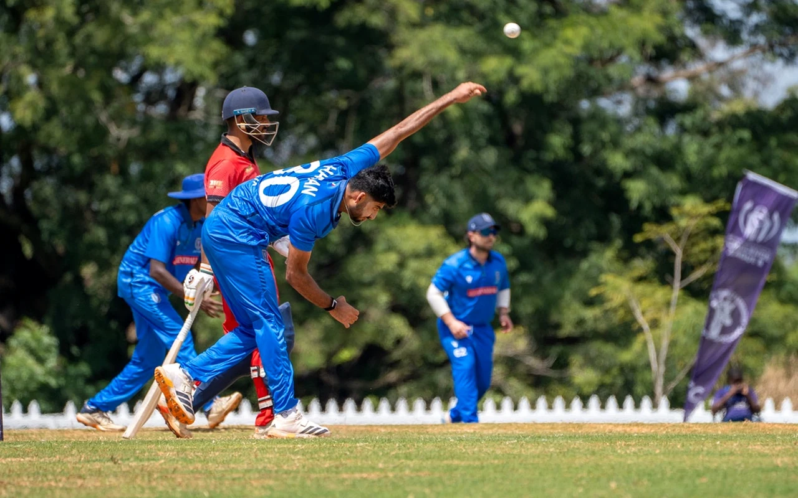

Cricket physiotherapy
Cricket injuries need a cricket plan.
Hamstring and side strains, bowlers’ backs, shoulder problems and the smaller issues that build across a long season. I assess them with the match role, training load and return to cricket in mind.
I have spent more than 15 years working in elite sport, including professional and international cricket. The point of that experience is not a wall of logos. It is knowing what bowling, batting and fielding ask of a player, and what must be rebuilt before a safe return.

Common cricket injuries and problems
- Lower-back pain and lumbar bone stress in fast bowlers.
- Hamstring and side strains in bowlers and fielders.
- Shoulder pain linked with bowling, throwing or overhead work.
- Knee, ankle and foot problems related to sprinting, landing and front-foot impact.
- Recurrent symptoms or small issues that worsen as the season progresses.
Further reading: Back stress fractures in fast bowlers: a plain guide.
Why the cricket workload matters
Cricket injuries do not always begin with one obvious event. A change in overs, intensity, bowling frequency, playing role or recovery time often contributes.
That is why the assessment includes questions about recent training and match demands. How much have you bowled? Across how many days? What changed? What does your role require when you return?
The injury still needs a sound clinical assessment. Workload adds context. It is not a diagnosis by itself.
What I assess
- Your symptoms, injury history and current diagnosis.
- Recent bowling, batting, throwing and fielding demands.
- Relevant strength, movement and physical capacity.
- The gap between your current capacity and your role.
- Return-to-training and return-to-play criteria where appropriate.
Cricket experience
My professional background includes roles across state, franchise and international cricket with Cricket Victoria, Cricket Australia programs, the Melbourne Stars, Melbourne Renegades, Hampshire Cricket, Sri Lanka Cricket, Bangladesh Cricket Board and Federazione Cricket Italiana.
Selected professional experience


How rehabilitation works
- Assess. Establish the diagnosis, the contributing factors and the demands of your role.
- Manage. Settle symptoms and adjust load while keeping useful activity where appropriate.
- Rebuild. Restore strength, movement and cricket-specific capacity.
- Return. Progress bowling, batting and fielding in stages, using relevant measures rather than the calendar alone.
In person or online
Two ways to work with me
In person at Bridge Road Physiotherapy
For local players who want an in-person assessment, treatment where useful and access to gym-based rehabilitation. This is the preferred starting point after a significant or unclear injury.
Book in Richmond →Online through The Cricket Physio
Video consultations for players outside Melbourne, focused on injury management, rehabilitation programming and cricket workload. The Cricket Physio is a separate online practice run by Thihan.
Visit The Cricket Physio →Common questions
No. Most cricketers I see are junior, club and social players. The same approach applies at every level: assess the injury, understand the workload and build back to what your role asks of you.
Get it assessed early rather than bowling through it. Persistent one-sided lower back pain in a young fast bowler needs an in-person assessment, and sometimes an MRI. The fast bowler back guide explains why.
Yes. Online consultations run through The Cricket Physio, a separate online practice run by Thihan. A significant or unclear injury is still best assessed in person first.
Bridge Road Physiotherapy also treats sports and everyday injuries, gym and lifting injuries, and running injuries.
Get the injury assessed before it takes over the season.
Book an in-person appointment in Richmond, or call to discuss the best starting point.